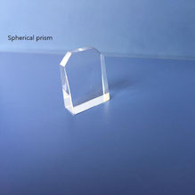
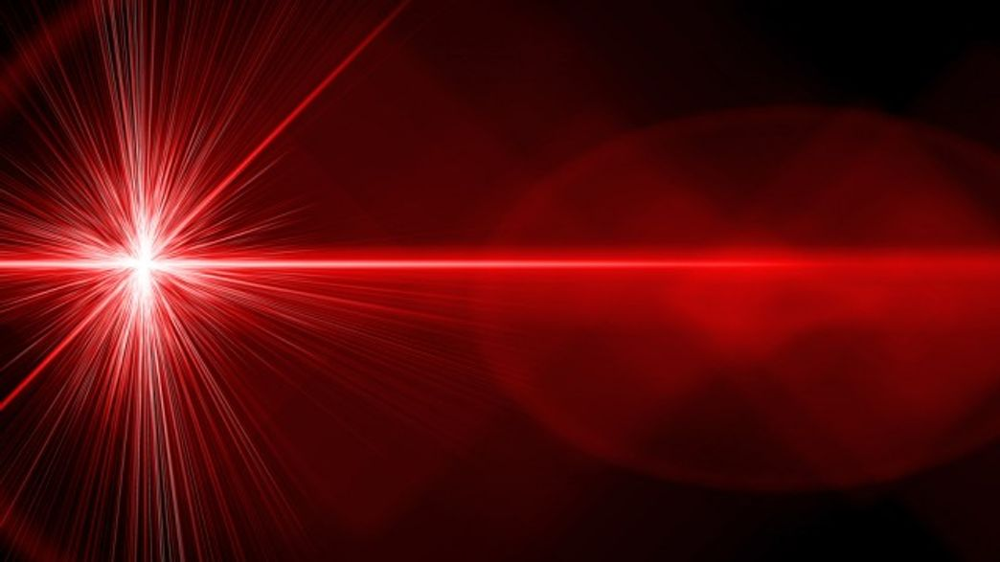
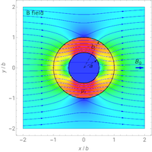

I'm a sports freak. If I go missing on weekends, you might find me in a badminton court.
I also love nature and like exploring places through hiking. Beaches are my all-time favourite destiantions.
The navigation of any modern missile, naval ship, aircrafts and even satellites depends on the performance of Ring Laser Gyroscopes. Total internal refelction (TIR) prisms are crucial components of the RLG's that play an important role in internally reflecting lasers that superimpose to form a firnge pattern. The change in fringe patterns are detected by sensors that enable gyroscopic stabilization and thus aid in navigation without the usage of conventional GPS.
I predominantly worked on imporving the Cosmetic Surface quality of the prisms by studying Chemical-Mechanical Planarization which is used in the fabrication of TIRs. The optimization of the production process of TIRs depends on the down force and oscillatory motion of the wafers. To optimize the production process, we collected roughness data of the prisms by operating profilometers and microscopes by identifying 4 data points on each prism. After collecting data, we performed ANOVA (Analysis of variance) between the in-house produced prisms and the supplier to find differences on statistical level. This study helped the scientists to take key decisions in optimizing the production process of TIRs.
(Fig: Total Internal Reflection Prism)
My second project focused on studying the behavior of laser in extreme temperatures. As we know that lasers travels in the form of waves and the wavelength of these lasers can be adversely affected by temperatures. The purpose of this study was to estimate accurate operating consitions at the component level by collecting laser power data in extreme temperature conditions. My work included collabortion with scientists to design and set up experimental set up in a temperature chamber and perform data analysis. Usually, power of laser decreases with increase in temperature and this was clearly evident from the experimental results. To counter this problem, scientists have been developing cryogenic lasers that are operated in cryogenic temperatures. RLG's usually use inert gas elements in the laser cavities that reduce the thermal effects and imporve the performance of lasers.
My final project focused on developing magnetic sheilds for RLGs. For the electronic components to work efficiently, it's important to insulate them from magnetic feilds. We started off by conducting literature survey on the materials used for magnetic sheilding such as Mu metals and Perm alloys. We modelled the sheilds using CATIA V5 and made several iterations of design by adding layers and varying the thickness of the material. We also simulated the model in COMSOL Multiphysics to compare the magnetic flux density and sheild effectiveness for different models. We found that smoothing the edges of the model will reduce the magnetic flux density, thus improving the effectiveness.
I consider this opportunity that introduced me to the state-of-the-art fabrication technology used in Chip Manufacturing and Electro Optics. This opportunity also allowed me to develop strong work ethics in difficult work environments.
I'm a sports freak. If I go missing on weekends, you might find me in a badminton court.
I also love nature and like exploring places through hiking. Beaches are my all-time favourite destiantions.
Thank you for reaching this point. I appreciate you for taking the time to explore my website. Please reach out to me if you find my work relatable or just want to have a casual talk.